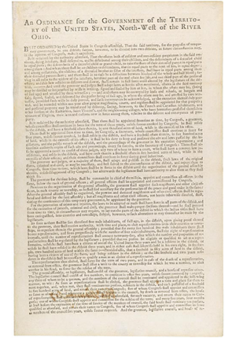
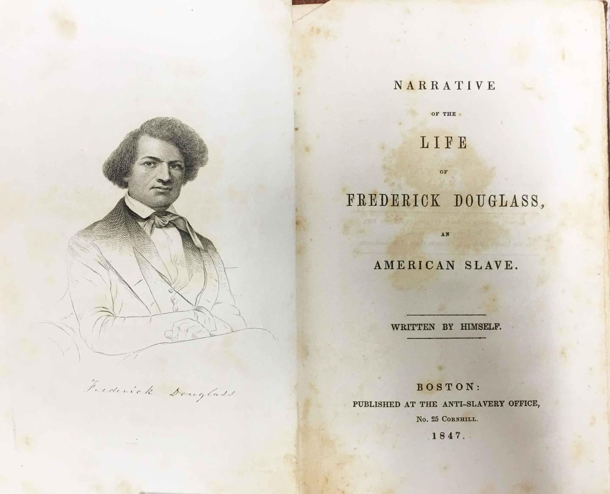
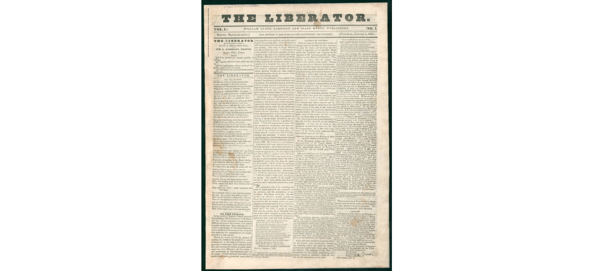

HISTORICKÉ PRAMENE
Dokumenty, ktoré formovali boj proti otroctvu
Historické dokumenty a dobové publikácie nám umožňujú nahliadnuť do zápasu o slobodu a pochopiť, ako sa otázka otroctva vyvíjala v americkej spoločnosti.
I. Severozápadné nariadenie (1787)

Severozápadné nariadenie stanovilo pravidlá správy územia severozápadne od rieky Ohio. Jeho šiesty článok zakazoval otroctvo a nedobrovoľnú službu na tomto území. Zároveň však obsahoval výnimku umožňujúcu vrátenie osôb, ktoré utiekli z otroctva alebo zo zákonom vymáhanej služby.
Článok VI — pôvodné znenie
There shall be neither slavery nor involuntary servitude in the said territory, otherwise than in the punishment of crimes whereof the party shall have been duly convicted: Provided, always, That any person escaping into the same, from whom labor or service is lawfully claimed in any one of the original States, such fugitive may be lawfully reclaimed and conveyed to the person claiming his or her labor or service as aforesaid.
Zdroj: National Constitution Center — The Northwest Ordinance
II. Frederick Douglass — hlas proti otroctvu

Frederick Douglass bol významným afroamerickým abolicionistom, rečníkom a autorom. Svojou verejnou činnosťou a písaním upozorňoval na nespravodlivosť otroctva a zasadzoval sa za práva Afroameričanov.
III. Prvé vydanie novín The Liberator (1831)

Prvé číslo novín The Liberator vyšlo 1. januára 1831 v Bostone. William Lloyd Garrison v nich presadzoval okamžité zrušenie otroctva. Noviny sa stali dôležitým hlasom abolicionistického hnutia v Spojených štátoch.